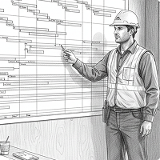
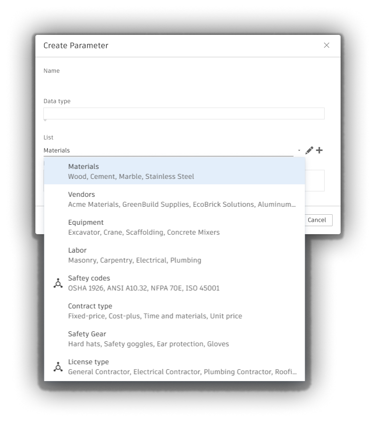
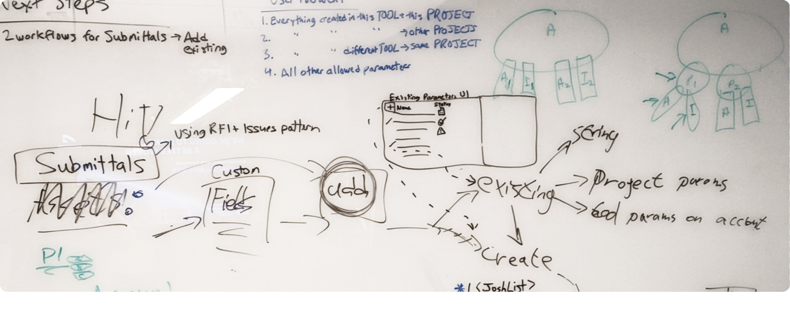
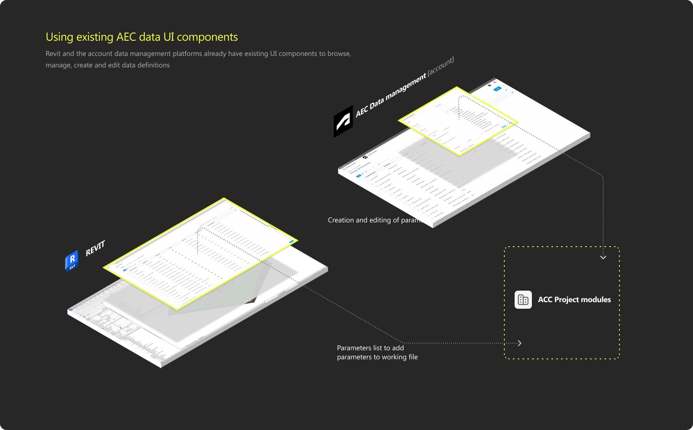
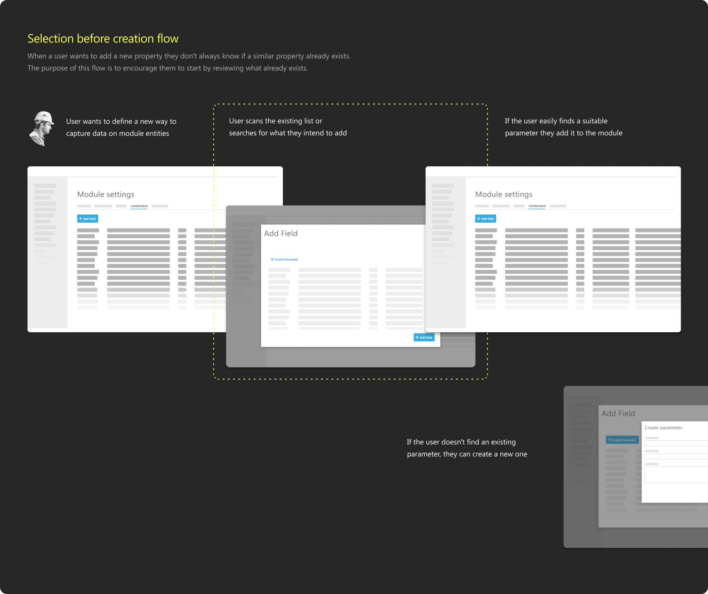
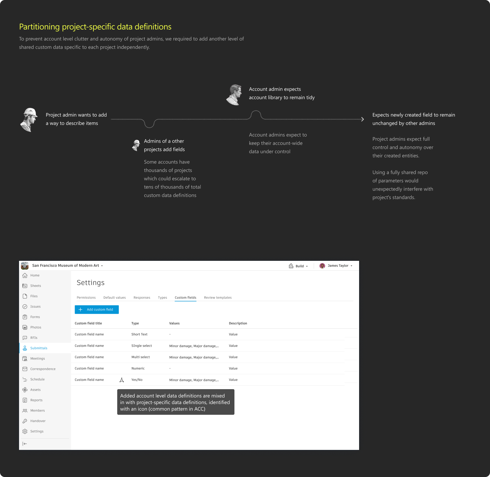

1Construction project manager

Manages schedules, budgets, safety, and compliance at project level. Needs project data to remain standardized and compliant without repeated setup.
Working on Autodesk Construction Cloud, I partnered with a platform custom-data team to define a cohesive data-management experience for our customers across products and management levels, supporting project-level flexibility and account-level data standardization.
The work spans two products, four personas, and two governance levels.
A collaboration between two Autodesk teams, each managing a different product and with different goals, serving four personas with distinct needs for standardized data.
Autodesk Construction Cloud’s Submittals module needed custom data for project records, while AEC Data already provided account-level data definition management.
Autodesk Construction Cloud connects design, construction, and project-management workflows. In Submittals, entities have a predefined property set, which limited the information teams could capture, sort, filter, export, and report on.
AEC Data is an Autodesk platform service used primarily in Revit to create and manage reusable data definitions. This project applies that capability to custom data in Submittals and develops a reusable pattern for other Construction Cloud modules.
Four personas use the same data framework in different products, workflows, and governance levels.
People who define and use project data inside active construction work.

Manages schedules, budgets, safety, and compliance at project level. Needs project data to remain standardized and compliant without repeated setup.
Maintains project documentation and resolves blockers. Needs to add, sort, filter, and export information when Submittals’ predefined properties do not cover the item.
People who create data definitions and set the standards used across projects.
Uses data definitions in Revit to describe BIM elements and capture design intent. Needs definitions that represent model information accurately.
Manages organizational standards, permissions, templates, and training. Needs data definitions that remain compliant and comparable across projects for reporting and analysis.
Account managers needed to enforce data definition consistency across projects, while construction project personas needed more flexibility in defining their own standards.
Submittals restricted entities to predefined properties. Construction project engineers needed custom fields to capture, sort, filter, and export information that those properties did not support.
AEC Data needed data definitions to remain consistent from design workflows into construction projects. The project had two goals: enable custom data in Submittals and establish a reusable data-definition management model across Construction Cloud modules and governance levels.
How we collaborated successfully and mitigated gaps

AEC Data definitions had to be reused in Construction Cloud without importing Revit terminology, navigation, or workflow assumptions.

Project teams need custom data, but each duplicate definition makes reporting and standardization harder across the account.

Account standards need to remain manageable across projects, while project teams need control over data created for their own work.

A shared definition could not quietly rewrite data already applied to project records.